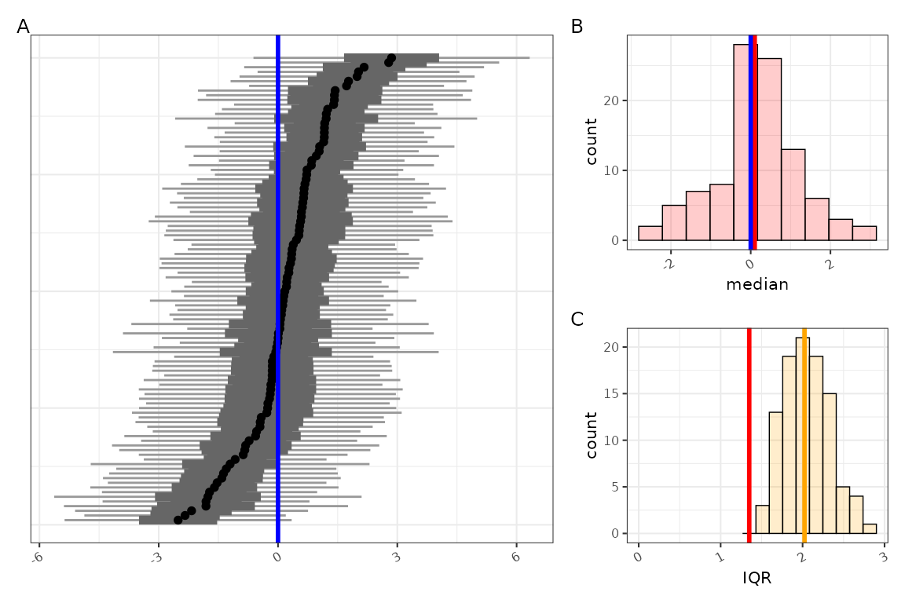
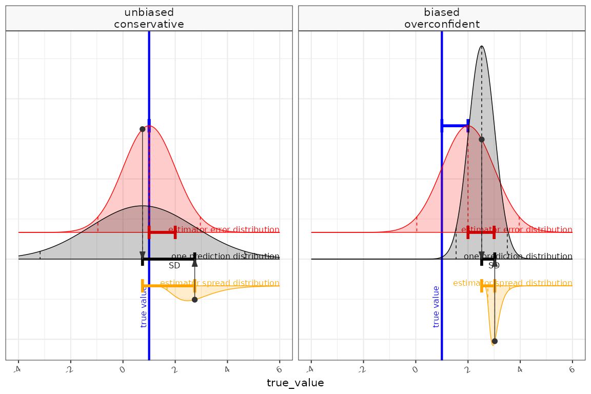
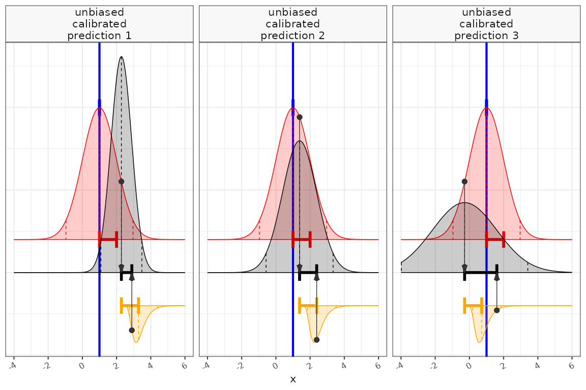
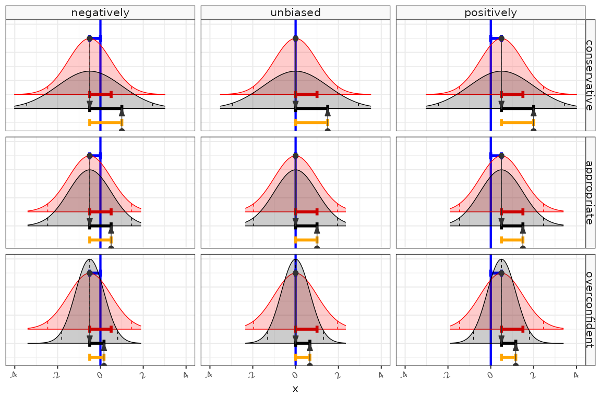
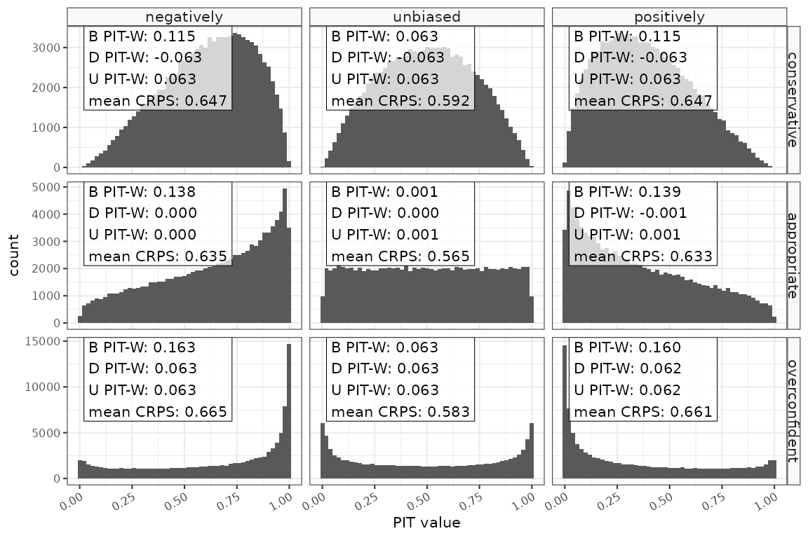

Introduction to calibration and probability integral transforms
Source:vignettes/introduction-to-pit.Rmd
introduction-to-pit.Rmd
# library(pitw)
devtools::load_all()
#> ℹ Loading pitw
library(tidyverse)
#> ── Attaching core tidyverse packages ──────────────────────── tidyverse 2.0.0 ──
#> ✔ dplyr 1.2.1 ✔ readr 2.2.0
#> ✔ forcats 1.0.1 ✔ stringr 1.6.0
#> ✔ ggplot2 4.0.4 ✔ tibble 3.3.1
#> ✔ lubridate 1.9.5 ✔ tidyr 1.3.2
#> ✔ purrr 1.2.2
#> ── Conflicts ────────────────────────────────────────── tidyverse_conflicts() ──
#> ✖ readr::edition_get() masks testthat::edition_get()
#> ✖ dplyr::filter() masks stats::filter()
#> ✖ dplyr::lag() masks stats::lag()
#> ✖ readr::local_edition() masks testthat::local_edition()
#> ℹ Use the conflicted package (<http://conflicted.r-lib.org/>) to force all conflicts to become errors
.gg_pedantic()
#> Warning: The requested font(s): [Roboto], are not present on the system. Alternatives will be used.
#> This warning is displayed once per session.
fig_dir = here::here("vignettes", "main", "fig")We compare 100 predictive distributions with the same reference value. Their medians show how far the forecasts are centred from that value, and their intervals show how much uncertainty the forecaster reports. We then use probability integral transform (PIT) histograms to examine how location bias and predictive spread affect the full distributions.
An estimator and its predictions
The simulated estimator is slightly biased and reports intervals that are too wide. We assess these tendencies across all 100 predictions because even a well-calibrated interval can miss the reference value on an individual occasion.
true_value = 0
estimator_bias_mean = 0.1
estimator_bias_sd = 1
estimator_bias_IQR = diff(qnorm(c(0.25,0.75), estimator_bias_mean, estimator_bias_sd))
calibration = 1.5
estimator_spread_mean = estimator_bias_sd*calibration
estimator_spread_sd = 0.2
samples = 100
predictions = tibble(
prediction_mean = true_value + rnorm(samples, estimator_bias_mean, estimator_bias_sd),
sample = rank(prediction_mean,ties.method = "first"),
prediction_sd = rlnorm2(samples, estimator_spread_mean, estimator_spread_sd),
prediction.0.025 = qnorm(0.025, prediction_mean, prediction_sd),
prediction.0.25 = qnorm(0.25, prediction_mean, prediction_sd),
prediction.0.5 = qnorm(0.5, prediction_mean, prediction_sd),
prediction.0.75 = qnorm(0.75, prediction_mean, prediction_sd),
prediction.0.975 = qnorm(0.975, prediction_mean, prediction_sd),
prediction_IQR = prediction.0.75-prediction.0.25,
)
fig1a = ggplot(data=predictions)+
geom_segment(aes(y=sample, x=prediction.0.025, xend=prediction.0.975, yend = sample), linewidth = 0.5, colour="grey60")+
geom_segment(aes(y=sample, x=prediction.0.25, xend=prediction.0.75, yend = sample), linewidth = 2, colour="grey40")+
geom_point(aes(y=sample, x=prediction.0.5), size = 2)+
geom_vline(xintercept = true_value, colour = "blue", linewidth = 1)+
ggplot2::theme(
axis.line.y = ggplot2::element_blank(),
axis.ticks.y = ggplot2::element_blank(),
axis.text.y = ggplot2::element_blank(),
axis.title.y = ggplot2::element_blank()
)+
xlab(NULL)
fig1b = ggplot(data=predictions)+
geom_histogram(aes(x=prediction.0.5), bins=10,fill="red", colour="black", alpha=0.2)+
geom_vline(xintercept = true_value+estimator_bias_mean, colour = "red", linewidth = 1)+
geom_vline(xintercept = true_value, colour = "blue",linewidth = 1)+
xlab("median")
fig1c = ggplot(data=predictions)+
geom_histogram(aes(x=prediction_IQR), bins=10,fill="orange", colour="black", alpha=0.2)+
geom_vline(xintercept = estimator_bias_IQR*calibration, colour = "orange", linewidth = 1)+
geom_vline(xintercept = estimator_bias_IQR, colour = "red",linewidth = 1)+
coord_cartesian(xlim=c(0,NA))+
xlab("IQR")
fig1 = fig1a + fig1b + fig1c + patchwork::plot_layout(design = "AAB\nAAC") + patchwork::plot_annotation(tag_levels = "A")
fig1
Panel A shows the median, interquartile range and 95% interval of each prediction. The blue line marks the reference value. In panel B the average of the predictive medians (red) is displaced from that value. This displacement is location bias.
Panel C compares the reported interquartile widths (orange) with the width expected from the spread of errors in panel B (red). The reported intervals are systematically wider. Dispersion calibration describes how well the reported uncertainty corresponds to the errors.
# .gg_save_as(
# fig1,
# file.path(fig_dir, "fig1-introduction"),
# size = std_size$third,
# formats = c("pdf", "eps")
# )Location bias and predictive spread
In these simulations, we draw a location error and a predictive spread independently for each prediction. The red distribution in the figure shows the location errors, and the orange distribution shows the reported spread. The grey curve is one predictive distribution.
# config = tibble(
# panel = forcats::as_factor(c("unbiased\ncalibrated","unbiased\nconservative","biased\noverconfident")),
# true_value = 1,
# bias_location = c(0,0,1),
# bias_scale = c(1,1,1),
# sharpness_location = c(1,2,0.5),
# sharpness_scale = 0.4,
# bias_quantile = c(0.5,0.5,0.5),
# sharpness_quantile = c(0.5,0.5,0.5)
# ) %>% group_by(panel)
config = tibble(
panel = forcats::as_factor(c("unbiased\nconservative","biased\noverconfident")),
true_value = 1,
bias_location = c(0,1),
bias_scale = c(1,1),
sharpness_location = c(2,0.5),
sharpness_scale = 0.4,
bias_quantile = c(0.4,0.7),
sharpness_quantile = c(0.5,0.5)
) %>% group_by(panel)
configuration_plot(config, xlim=c(-4,6))
#> Warning: Removed 1128 rows containing missing values or values outside the scale range
#> (`geom_ribbon()`).
On the left, the distribution of location errors is centred at the reference value and the predictive distribution is too wide. On the right, the error distribution is displaced and the predictive distribution is too narrow. The two examples show why we assess the location and spread of the forecasts separately.
Variation in predictive spread
config = tibble(
panel = forcats::as_factor(c("unbiased\ncalibrated\nprediction 1","unbiased\ncalibrated\nprediction 2","unbiased\ncalibrated\nprediction 3")),
true_value = 1,
bias_location = 0,
sharpness_scale = 0.4,
bias_quantile = c(0.9,0.65,0.1),
sharpness_quantile = c(0.1,0.5,0.95)
) %>% group_by(panel)
configuration_plot(config, labels=FALSE, xlim=c(-4,6))
#> Warning: Removed 1540 rows containing missing values or values outside the scale range
#> (`geom_ribbon()`).
The three predictions come from an unbiased estimator with the correct typical width. The narrow prediction on the left has a large error and the wide prediction on the right lies close to the reference value.
In this simulation, reported uncertainty varies independently of the error. We call this spread–error decoupling. A model can also have varying predictive spread because the expected size of its errors differs between predictions.
The probability integral transform
For each observation, evaluate the predictive cumulative distribution at the observed value. The result is the PIT, \(u_i = F_i(x_i)\), which gives the proportion of the predictive distribution below that value.
For calibrated continuous forecasts, the PIT values follow a uniform distribution on \([0,1]\). The simulation below varies bias across columns and predictive spread across rows to illustrate how each affects the histogram.
config = tidyr::crossing(
bias_location = c(-0.5, 0, 0.5),
bias_scale = 1,
sharpness_location = c(1 / 1.5, 1, 1.5)
)
config = config %>% mutate(
samples = 100000,
true_value = 0,
confidence = case_when(
bias_scale > sharpness_location ~ "overconfident",
bias_scale < sharpness_location ~ "conservative",
TRUE ~ "appropriate"
) %>%
factor(levels = c("conservative", "appropriate", "overconfident")),
biased = case_when(
bias_location > 0 ~ "positively",
bias_location < 0 ~ "negatively",
TRUE ~ "unbiased"
) %>%
factor(levels = c("negatively", "unbiased", "positively"))
)
configuration_plot(config %>% group_by(confidence, biased), labels=FALSE)
#> Warning: Removed 5184 rows containing missing values or values outside the scale range
#> (`geom_ribbon()`).
sim = config %>% generate_simulation()
#> interfacer: development mode active (test environment).
#> This message is displayed once every 8 hours.
#> Warning: unexpected groups in the return value of generate_simulation(...):
#> observed: bias_location+bias_scale+sharpness_location+samples+confidence+biased+link+dist+bias_dist+sharpness_dist+sharpness_scale+run_id+calibration+adjust
#> expected: <any>+dist+link+calibration+adjust
#> Warning: ireturn validation did not pass without changing the value.
glimpse(sim)
#> Rows: 900,000
#> Columns: 18
#> Groups: bias_location, bias_scale, sharpness_location, samples, confidence, biased, bias_dist, sharpness_dist, sharpness_scale, run_id, dist, link, calibration, adjust [9]
#> $ bias_location <dbl> -0.5, -0.5, -0.5, -0.5, -0.5, -0.5, -0.5, -0.5, -0.…
#> $ bias_scale <dbl> 1, 1, 1, 1, 1, 1, 1, 1, 1, 1, 1, 1, 1, 1, 1, 1, 1, …
#> $ sharpness_location <dbl> 0.6666667, 0.6666667, 0.6666667, 0.6666667, 0.66666…
#> $ samples <int> 100000, 100000, 100000, 100000, 100000, 100000, 100…
#> $ confidence <fct> overconfident, overconfident, overconfident, overco…
#> $ biased <fct> negatively, negatively, negatively, negatively, neg…
#> $ link <chr> "identity", "identity", "identity", "identity", "id…
#> $ dist <chr> "norm", "norm", "norm", "norm", "norm", "norm", "no…
#> $ bias_dist <chr> "norm", "norm", "norm", "norm", "norm", "norm", "no…
#> $ sharpness_dist <chr> "lnorm4", "lnorm4", "lnorm4", "lnorm4", "lnorm4", "…
#> $ sharpness_scale <dbl> 0, 0, 0, 0, 0, 0, 0, 0, 0, 0, 0, 0, 0, 0, 0, 0, 0, …
#> $ run_id <int> 1, 1, 1, 1, 1, 1, 1, 1, 1, 1, 1, 1, 1, 1, 1, 1, 1, …
#> $ calibration <dbl> 0.6666667, 0.6666667, 0.6666667, 0.6666667, 0.66666…
#> $ estimate_id <int> 1, 2, 3, 4, 5, 6, 7, 8, 9, 10, 11, 12, 13, 14, 15, …
#> $ true_value <dbl> 0, 0, 0, 0, 0, 0, 0, 0, 0, 0, 0, 0, 0, 0, 0, 0, 0, …
#> $ location <dbl> -0.92938009, 0.86046133, -0.57085743, -0.77215368, …
#> $ scale <dbl> 0.6666667, 0.6666667, 0.6666667, 0.6666667, 0.66666…
#> $ adjust <chr> "link", "link", "link", "link", "link", "link", "li…
component_scores = sim %>% prediction_scores(summarise = FALSE)
glimpse(component_scores)
#> Rows: 900,000
#> Columns: 37
#> Groups: bias_location, bias_scale, sharpness_location, samples, confidence, biased, bias_dist, sharpness_dist, sharpness_scale, run_id, dist, link, calibration, adjust [9]
#> $ bias_location <dbl> -0.5, -0.5, -0.5, -0.5, -0.5, -0.5, -0.5, -0.5…
#> $ bias_scale <dbl> 1, 1, 1, 1, 1, 1, 1, 1, 1, 1, 1, 1, 1, 1, 1, 1…
#> $ sharpness_location <dbl> 0.6666667, 0.6666667, 0.6666667, 0.6666667, 0.…
#> $ samples <int> 100000, 100000, 100000, 100000, 100000, 100000…
#> $ confidence <fct> overconfident, overconfident, overconfident, o…
#> $ biased <fct> negatively, negatively, negatively, negatively…
#> $ bias_dist <chr> "norm", "norm", "norm", "norm", "norm", "norm"…
#> $ sharpness_dist <chr> "lnorm4", "lnorm4", "lnorm4", "lnorm4", "lnorm…
#> $ sharpness_scale <dbl> 0, 0, 0, 0, 0, 0, 0, 0, 0, 0, 0, 0, 0, 0, 0, 0…
#> $ run_id <int> 1, 1, 1, 1, 1, 1, 1, 1, 1, 1, 1, 1, 1, 1, 1, 1…
#> $ dist <chr> "norm", "norm", "norm", "norm", "norm", "norm"…
#> $ link <chr> "identity", "identity", "identity", "identity"…
#> $ calibration <dbl> 0.6666667, 0.6666667, 0.6666667, 0.6666667, 0.…
#> $ adjust <chr> "link", "link", "link", "link", "link", "link"…
#> $ estimate_id <int> 1, 2, 3, 4, 5, 6, 7, 8, 9, 10, 11, 12, 13, 14,…
#> $ true_value <dbl> 0, 0, 0, 0, 0, 0, 0, 0, 0, 0, 0, 0, 0, 0, 0, 0…
#> $ location <dbl> -0.92938009, 0.86046133, -0.57085743, -0.77215…
#> $ scale <dbl> 0.6666667, 0.6666667, 0.6666667, 0.6666667, 0.…
#> $ u_i_unadj <dbl> 0.9183517860, 0.0984052516, 0.8040802388, 0.87…
#> $ univ_resid <dbl> 0.83670357, -0.80318950, 0.60816048, 0.7532300…
#> $ u_i <dbl> 7.375540e-01, 2.023402e-02, 5.390492e-01, 6.55…
#> $ adj_true_value <dbl> -0.5054983, -0.5054983, -0.5054983, -0.5054983…
#> $ bias <dbl> -0.92938009, 0.86046133, -0.57085743, -0.77215…
#> $ rank_order <int> 66432, 8603, 52627, 60604, 99257, 47231, 86426…
#> $ unif <dbl> 0.664315, 0.086025, 0.526265, 0.606035, 0.9925…
#> $ rank_order_unadj <int> 66432, 8603, 52627, 60604, 99257, 47231, 86426…
#> $ unif_unadj <dbl> 0.664315, 0.086025, 0.526265, 0.606035, 0.9925…
#> $ b_pit <dbl> 0.254036786, 0.012380252, 0.277815239, 0.27058…
#> $ u_pit <dbl> 0.073238978, 0.065790984, 0.012784192, 0.04938…
#> $ d_pit <dbl> 0.073238978, 0.065790984, 0.012784192, 0.04938…
#> $ P_i_err <dbl> NA, NA, NA, NA, NA, NA, NA, NA, NA, NA, NA, NA…
#> $ abs_diff_gX_gT <dbl> NA, NA, NA, NA, NA, NA, NA, NA, NA, NA, NA, NA…
#> $ crps <dbl> 0.6027866, 0.5462502, 0.3397106, 0.4774687, 2.…
#> $ pred_interval_width.0.5 <dbl> 0.8993197, 0.8993197, 0.8993197, 0.8993197, 0.…
#> $ covered.0.5_adj <lgl> TRUE, FALSE, TRUE, TRUE, FALSE, TRUE, FALSE, F…
#> $ covered.0.5 <lgl> FALSE, FALSE, FALSE, FALSE, FALSE, TRUE, FALSE…
#> $ covered.0.95 <lgl> TRUE, TRUE, TRUE, TRUE, FALSE, TRUE, FALSE, TR…
summary_scores = sim %>% prediction_scores() %>%
mutate(label = sprintf(
"B PIT-W: %1.3f\nD PIT-W: %1.3f\nU PIT-W: %1.3f\nmean CRPS: %1.3f",
B_pit,
D_pit,
U_pit,
mean_crps
))
glimpse(summary_scores)
#> Rows: 9
#> Columns: 27
#> Groups: bias_location, bias_scale, sharpness_location, samples, confidence, biased, bias_dist, sharpness_dist, sharpness_scale, run_id, dist, link, calibration, adjust [9]
#> $ bias_location <dbl> -0.5, -0.5, -0.5, 0.0, 0.0, 0.0, 0.5, 0.5…
#> $ bias_scale <dbl> 1, 1, 1, 1, 1, 1, 1, 1, 1
#> $ sharpness_location <dbl> 0.6666667, 1.0000000, 1.5000000, 0.666666…
#> $ samples <int> 100000, 100000, 100000, 100000, 100000, 1…
#> $ confidence <fct> overconfident, appropriate, conservative,…
#> $ biased <fct> negatively, negatively, negatively, unbia…
#> $ bias_dist <chr> "norm", "norm", "norm", "norm", "norm", "…
#> $ sharpness_dist <chr> "lnorm4", "lnorm4", "lnorm4", "lnorm4", "…
#> $ sharpness_scale <dbl> 0, 0, 0, 0, 0, 0, 0, 0, 0
#> $ run_id <int> 1, 2, 3, 4, 5, 6, 7, 8, 9
#> $ dist <chr> "norm", "norm", "norm", "norm", "norm", "…
#> $ link <chr> "identity", "identity", "identity", "iden…
#> $ calibration <dbl> 0.6666667, 1.0000000, 1.5000000, 0.666666…
#> $ adjust <chr> "link", "link", "link", "link", "link", "…
#> $ n_predictions <int> 100000, 100000, 100000, 100000, 100000, 1…
#> $ bias <dbl> -0.5032425520, -0.5000058077, -0.49975872…
#> $ universal_bias <dbl> 3.243582e-01, 2.759956e-01, 2.183710e-01,…
#> $ mean_crps <dbl> 0.6646575, 0.6354256, 0.6471711, 0.583258…
#> $ mean_pred_interval_width.0.5 <dbl> 0.8993197, 1.3489795, 2.0234693, 0.899319…
#> $ mean_coverage.0.5 <dbl> 0.30820, 0.44881, 0.62951, 0.34726, 0.499…
#> $ mean_coverage.0.5_adj <dbl> 0.34549, 0.50038, 0.68816, 0.34717, 0.499…
#> $ mean_coverage.0.95 <dbl> 0.75451, 0.91926, 0.99237, 0.80870, 0.950…
#> $ B_pit <dbl> 0.1630438323, 0.1379977854, 0.1148999047,…
#> $ U_pit <dbl> 0.0628946309, 0.0004465913, 0.0629375456,…
#> $ D_pit <dbl> 6.289462e-02, 7.573475e-06, -6.293754e-02…
#> $ P_misclass <dbl> NA, NA, NA, NA, NA, NA, NA, NA, NA
#> $ label <chr> "B PIT-W: 0.163\nD PIT-W: 0.063\nU PIT-W:…
fig2_pit = ggplot() +
geom_histogram(
data = component_scores,
mapping = aes(x = u_i_unadj),
binwidth = 0.02
) +
ggplot2::geom_label(
data = summary_scores,
aes(label = label),
x = 0.02,
y = Inf,
inherit.aes = FALSE,
vjust = 1,
hjust = 0,
size = 8,
size.unit = "pt",
alpha = 0.75,
label.r = unit(0, "pt")
) +
facet_grid(confidence ~ biased, scales = "free_y") +
xlab("PIT value")
fig2_pit
The centre panel shows the histogram for the calibrated simulation. The remaining panels illustrate the patterns below. Several kinds of error can produce the same pooled histogram, particularly when forecasts come from different groups.
| PIT histogram | Scenario illustrated |
|---|---|
| flat | calibrated |
| U-shaped (mass at both ends) | Overconfident forecasts with intervals that are too narrow |
| dome-shaped (mass in the middle) | Conservative forecasts with intervals that are too wide |
| sloped (mass at one end) | Biased forecasts with observations tending to lie on one side |
| sloped and U- or dome-shaped | both |
The labels show the three PIT-Wasserstein scores and the mean continuous ranked probability score (CRPS). \(B_{pit}\) summarises the departure from uniformity in the original PIT values. After a common location adjustment, \(U_{pit}\) summarises the remaining departure and \(D_{pit}\) describes its direction. CRPS gives an overall measure of probabilistic forecast quality.
The parameters behind the grid, for reference:
# .gg_save_as(
# fig2_pit,
# file.path(fig_dir, "fig2-pit-histograms"),
# size = std_size$half,
# formats = c("pdf", "eps")
# )
tab1 = summary_scores %>%
ungroup() %>%
transmute(
confidence,
biased,
`bias (µₑ)` = sprintf("%1.2f", bias_location),
`sharpness (σₑ)` = sprintf("%1.2f", sharpness_location),
`dispersion calibration (σₑ/σₛ)` = sprintf("%1.2f", calibration)
) %>%
.hux_tidy(
rowGroupVars = c("biased", "confidence"),
colGroupVars = c()
)
#> Warning: Using `by = character()` to perform a cross join was deprecated in dplyr 1.1.0.
#> ℹ Please use `cross_join()` instead.
#> ℹ The deprecated feature was likely used in the pitw package.
#> Please report the issue to the authors.
#> This warning is displayed once per session.
#> Call `lifecycle::last_lifecycle_warnings()` to see where this warning was
#> generated.
tab1| biased | confidence | bias (µₑ) | sharpness (σₑ) | dispersion calibration (σₑ/σₛ) |
|---|---|---|---|---|
| negatively | conservative | -0.50 | 1.50 | 1.50 |
| appropriate | -0.50 | 1.00 | 1.00 | |
| overconfident | -0.50 | 0.67 | 0.67 | |
| unbiased | conservative | 0.00 | 1.50 | 1.50 |
| appropriate | 0.00 | 1.00 | 1.00 | |
| overconfident | 0.00 | 0.67 | 0.67 | |
| positively | conservative | 0.50 | 1.50 | 1.50 |
| appropriate | 0.50 | 1.00 | 1.00 | |
| overconfident | 0.50 | 0.67 | 0.67 |
Where next
-
vignette("pit-w-metrics")— how the three metrics are defined and how they separate bias from dispersion. -
vignette("significance-testing")— their null distributions, so that a value can be reported with a \(p\)-value. -
vignette("sample-sizes-and-power")— how many predictions you need. -
vignette("sir-epiestim-example")— how case counts and window choice affect intervals for \(R_t\), using one estimate per independent simulated series at each setting.
# tab1 %>%
# .hux_save_as(
# file.path(fig_dir, "tab1-params.pdf"),
# size = std_size$half
# )